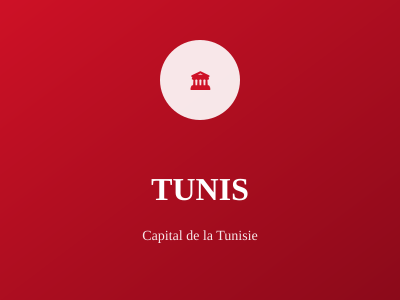

Capitale politique et économique de la Tunisie

Tunis est la capitale politique, économique et culturelle de la Tunisie. Elle est le cœur administratif et commercial du pays depuis des siècles. La médina historique de Tunis est inscrite au patrimoine mondial de l'UNESCO, témoignant de son importance historique et culturelle exceptionnelle.
La ville combine histoire antique, patrimoine médiéval et modernité, avec ses quartiers anciens contrastant avec le développement urbain contemporain. Tunis est un centre majeur de commerce, d'industrie et de services en Afrique du Nord.